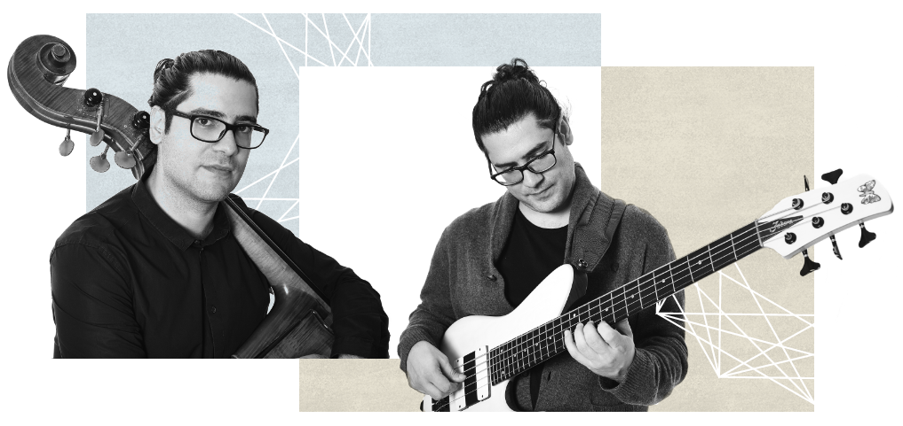

«To have a Quartet in the Middle East of that quality,
and to see them pull it off live is something to be cherished.»
Paul Kelly - triplew.me
«Fans of jazz in the city know Elie Afif as the earnest young
bassist behind various successful jazz nights.»
Simone Sebastian - Satellite Voices